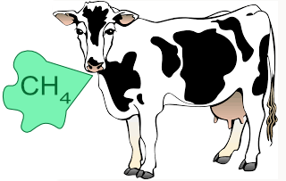
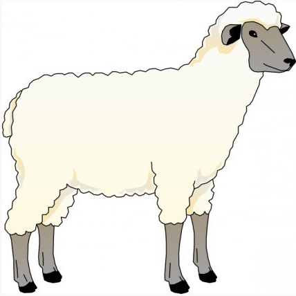
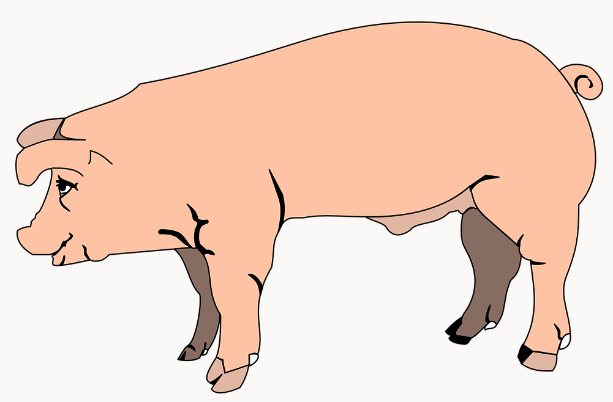

95% of methane from cows comes from them burping not farting! Cows are from a group of animals called ruminants, they have 4 compartments in their stomachs which (unlike humans) enables them to digest grass. During this digestion microbes breakdown grass emitting methane gas.

Sheep like cows are ruminant animals with 4-part stomachs, that's why they make lots of methane like a cow.

Pigs digestive system is more like a humans with just one stomach so they produce far less methane.
